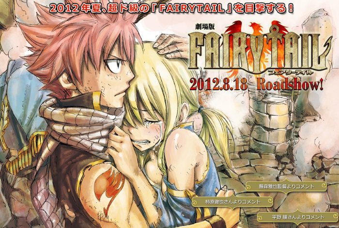
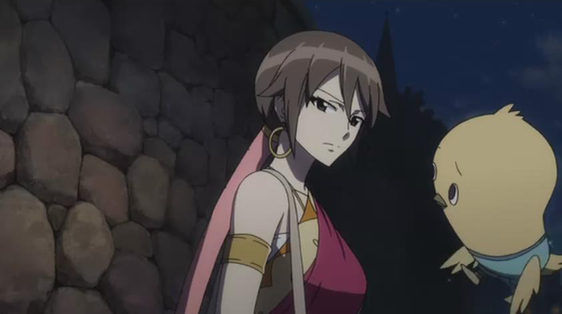
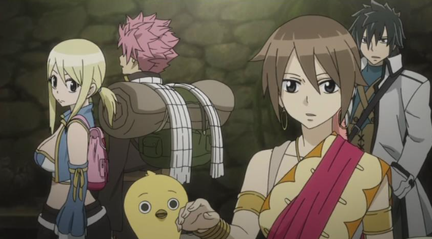

妖精的尾巴剧场版：凤凰的巫女 劇場版 FAIRY TAIL -鳳凰の巫女- (2012)

- 导演: 藤森雅也
- 编剧: 十川诚志 / 真岛浩
- 主演: 柿原彻也 / 平野绫 / 钉宫理惠 / 中村悠一 / 大原沙耶香 / 更多...
- 类型: 动画
- 官方网站: fairytail-movie.com
- 制片国家/地区: 日本
- 语言: 日语
- 上映日期: 2012-08-18
- 片长: 86分钟
- 又名: 凤凰的巫女 / 劇場版 フェアリーテイル 鳳凰の巫女 /

在某个临海小镇，隶属魔导士公会下设分支机构“妖精的尾巴（Fairy Tail）”的纳兹·多拉格尼尔（柿原彻也 配音）、 露西·哈特菲利亚（平野绫 配音）、格雷·佛尔帕斯塔（中村悠一 配音）等人接受委托， 前来捉拿某盗贼团头领基斯。经过一番激战，虽然纳兹等人消灭盗贼团的大多数成员， 可是基斯还是在露西面前溜走。心灰意冷的众人回到总部，露西则意外在途中救助了神秘少女艾克蕾娅（远藤绫 配音）。 失去记忆的艾克蕾娅手持半块凤凰石，她隐约记得要前往一座森林。纳兹他们决定出手相助， 谁知在旅途中不断有敌人向他们袭来，而他们的目标便是那半块引来无数纷争的凤凰石……
